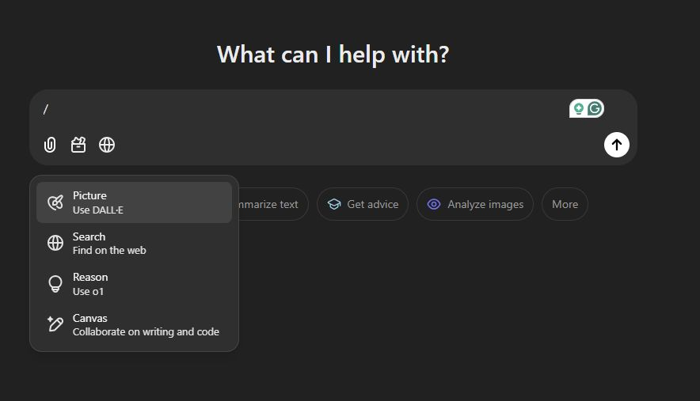

הידעתם שאם תלחצו על המקש "/" ב-Chat GPT הוא יתן לכם קיצורי דרך לכלים השונים שלו - יצירת תמונה / חיפוש ברשת / שימוש ב-o1 / שימוש בc
פורסם במקור ב LinkedIn
הידעתם שאם תלחצו על המקש "/" ב-Chat GPT הוא יתן לכם קיצורי דרך לכלים השונים שלו - יצירת תמונה / חיפוש ברשת / שימוש ב-o1 / שימוש בcanvas?
עובד גם מהמחשב וגם מהנייד - ורק כשמחוברים לחשבון 🤯 🤖
#chatgpt
